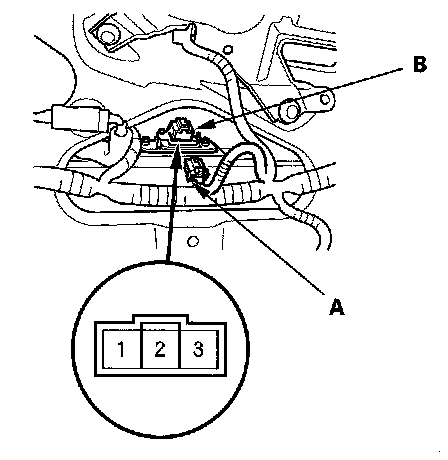
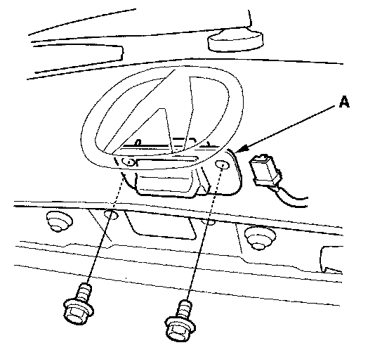

Tailgate Outer Handle Switch Test/Replacement
Tailgate Outer Handle Switch Test/Replacement1. Remove the tailgate trim panel.

2. Disconnect the 3P connector (A) from the tailgate outer handle switch (B).
3. Check for continuity between the tailgate outer handle switch 3P connector No. 2 and No. 3 terminals.
- There should be continuity when the tailgate outer handle is pulled.
- There should be no continuity when the tailgate outer handle is released.

4. If the continuity is not as specified, remove the two bolts and the tailgate outer handle switch (A).
5. Install the switch in the reverse order of removal.